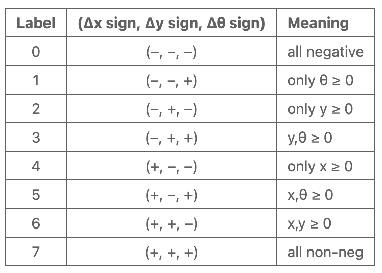
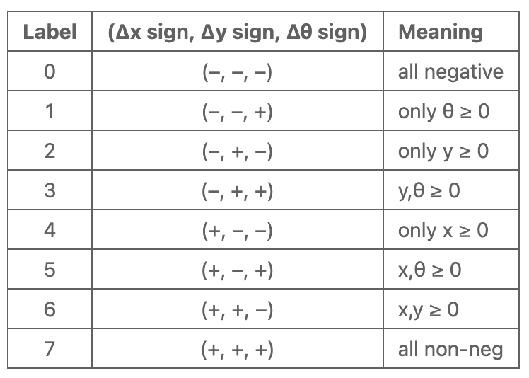
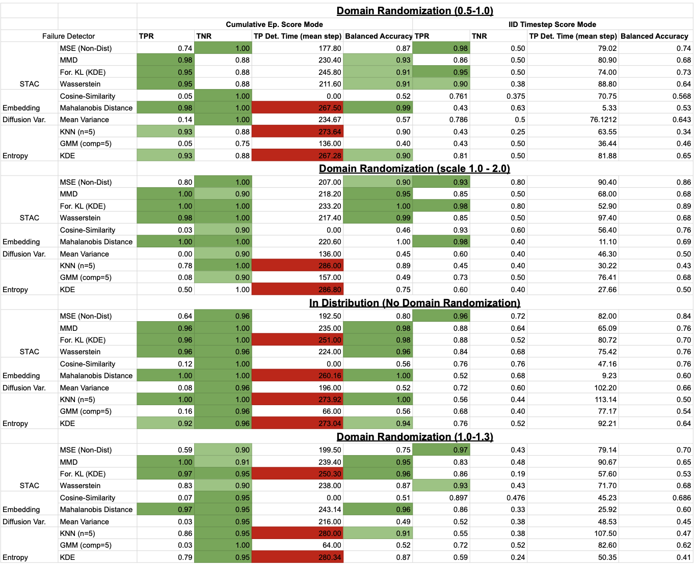
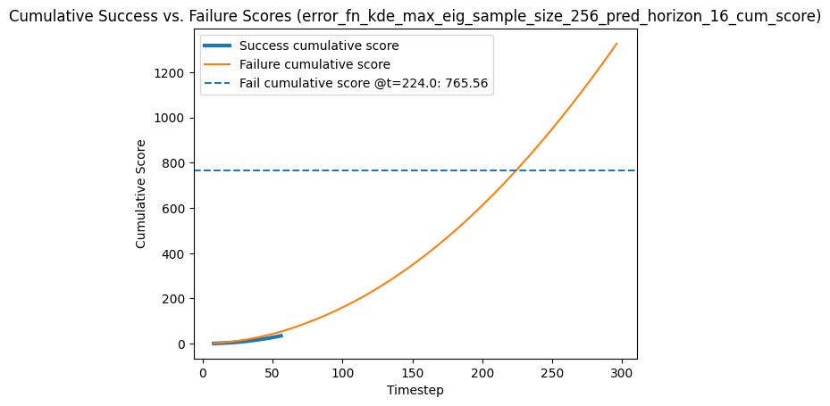
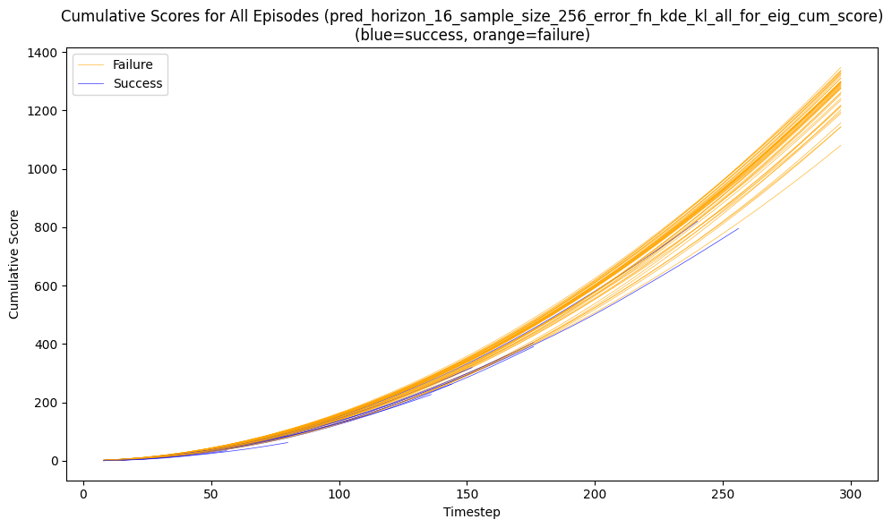
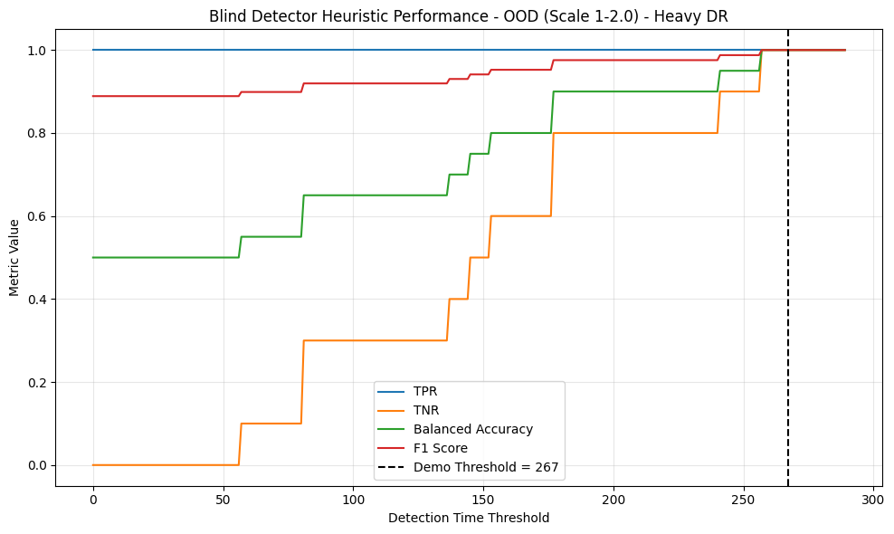

| Improving Failure Detection for Diffusion Visuomotor Policies via Push-T Simulation | |||
| Rajiv Swamy | Jayson Lin | ||
| Final project for 6.8300, MIT | |||
Results + Analysis
Dataset Analysis
Successful Trajectory
Failure Trajectory
Multi-Modal Trajectory
Figure 2. Example Trajectories in Push-T Simulation: These are example trajectories for how the Push-T simulation works. Observe that the point on the screen acts as the end-effector of a robotic arm which pushes the T-shaped object to the green-shaded T target. The first video shows a successful trajectory, the second video shows a failure trajectory, and the third video shows a multi-modal trajectory at the start, where left and right trajectories are considered.
Baseline Performances
Figure 1 exhibits the baseline performances of the diffusion policy on our generated datasets, which are annotated with scale ranges for domain randomization. We observe that, trivially due to how the Push-T environment is set up, the episode duration for all failures is 300 as the environment executes until the maximum timesteps is reached or a success state is reached. This mirrors the setup in Sentinel. The results show that the action-diffusion policy achieves roughly comparable performance on both the calibration (in‑distribution) and validation (in‑distribution) sets, with mean success duration times of 159.8 vs. 149.1 and success rates of 48.5% vs. 50.0%. Introducing light domain randomization (scaling between 1.0–1.3) yields a slightly higher average success duration (167.6) and a modest drop in success rate to 42.0%, suggesting that the policy is capable of adapting to slight changes from the training data distribution. In contrast, heavy randomization (scale 1.0–2.0) cuts the success rate to 20.0% and reduces the mean success time back to the in‑distribution level (149.6), while heavy down‑scaling (0.5–1.0) produces a similar effects with a slightly higher mean success time (162), very high variance (std 82.2), and the lowest success rate overall (16.0%). These trends indicate that extreme changes in object scale, particularly making objects much smaller, push the model well outside its learned representations of the Push-T environment. Overall, the policy struggles to generalize under severe OOD scale variations. This effect allows us to create datasets with varying balances of successful and unsuccessful trajectories to observe each failure detection’s performance across in-distribution and OOD trajectories.
Latent Representation Exploration
 

Figure 3. t-SNE Plot of Visual Observation Embeddings:This plot shows visual observation embeddings for the relative pose orthant classes. From observation alone, there seems to be some clustering between relative pose orthant classes.
To answer the second research question, we aggregated the visual observation embeddings (which are comprised of the fine-tuned ResNet embeddings (dim=512) plus the agent position at each timestep) and applied PCA dimensionality reduction, followed by t-SNE to visualize the high-dimensional data. We labeled each embedding according to 8 goal-oriented relative pose orthants (borrowed from Qi et al. [7]). Figure 3 shows the resulting visualization with a legend for the relative pose orthant class labels. There seems to be some clustering between relative pose orthant classes. We also note that embeddings labeled by orthants that are adjacent to each other seem to neighbor each other as well in the embedding space (e.g., labels 4 and 5). To further validate a relationship, we trained a linear classifier (multinomial logistic regression) mapping the embeddings to the class labels, achieving a cross-validation accuracy \(0.75 \pm 0.015\), showing that there is relatively strong predictive power and that there is a control-oriented relationship in this embedding space. Because of this relationship, we hypothesized that these embeddings would be effective for failure prediction.
Failure Detector Results
Figure 4. Table of Experiment Results: The table shows the failure detection performances of the methods STAC, Embedding, Diffusion Variance, and Entropy with various corresponding error functions across two scoring mechanisms: Cumulative-Episode Scoring and I.I.D. Timestep Scoring. The method configurations are ran on the 4 types of generated datasets.
STAC Method
The STAC family of detectors, which measure distributional shift via MSE, MMD, forward–KL (with KDE), and Wasserstein distances on the diffusion model’s predictions, exhibits consistently strong performance across all test conditions. In the cumulative episode score mode, MMD and forward–KL yield balanced accuracies above 0.93 (light DR) to 1.00 (heavy DR scale 1.0–2.0), and even MSE maintains a balanced accuracy \(\ge 0.87\) under severe scaling (0.5–1.0). Detection times cluster around 200–240 timesteps, meaning failures are flagged further along an episode, closer to the max duration. In the IID timestep score mode, STAC still delivers robust balanced accuracies (\(\approx0.64–0.73\)) and detects anomalies within the first 50–90 timesteps. Overall, STAC’s distribution‐based metrics reliably identify both in‐distribution and out‐of‐distribution failures with high precision and moderate latency.
Our addition of Wasserstein Distance as STAC’s error function produces comparable results to STAC’s best-performing error functions MMD and forward-KL, and we conclude it is worth considering as an alternative error function.
Visual Latent Embeddings
Embedding‐based detection uses distances in the vision encoder’s latent space. Cosine‐similarity fails to distinguish failure frames (true‐positive rates \(\approx\) 0), yielding balanced accuracies \(<\) 0.6 in all of the Cumulative Ep score settings. It does marginally better in the IID Timestep score setting with balanced accuracies \(<\) 0.76. By contrast, Mahalanobis distance on the same embeddings achieves near‐perfect classification in the cumulative mode (balanced accuracies \(\le\) 0.96 across all DR scales and in‐distribution), but only flags episodes very late (mean detection step \(\approx\) 220–270). In the IID mode, Mahalanobis retains reasonable true‐positive rates (0.40–0.63) and balanced accuracies around 0.53–0.69, while detecting failures almost immediately (5–11 timesteps). Thus, latent‐space embeddings can be extremely accurate, but the Mahalanobis distance seems to be the only stable error function implementation for this embeddings approach.
We conclude that an embeddings approach with Mahalanobis Distance with Cumulative Episode scoring is quite effective in settings where large detection times are permissible, while an approach with the IID Timestep scoring could be effective in a hierarchical setting where its early detection could be useful.
Entropy-Based Failure Detection
Entropy‐based methods approximate the model’s predictive uncertainty via the KNN, GMM, or KDE estimates discussed in the methods section. Under in‐distribution conditions, KNN and KDE achieve very high cumulative balanced accuracies (\(\ge\) 0.94), but detect failures only at the very end of each episode (\(\approx\) 273 steps). GMM performs poorly in all settings (balanced accuracies \(<\) 0.60). With domain randomization, cumulative balanced accuracies for KNN and KDE remain \(\ge\) 0.75, whereas GMM remains unreliable. In the timestep IID mode, however, all entropy‐based detectors suffer degraded balanced accuracies (often \(<\) 0.60), especially under heavy DR. This likely indicates that entropy captures aggregated novelty at the cost of a large detection time but lacks stability for timestep‐level anomaly detection.
Method Comparison: I.I.D. Timesteps Errors vs. I.I.D. Cumulative Episode Errors
Aggregating anomaly scores over an entire episode using the cumulative calibration mode dramatically boosts classification accuracy for all methods (cumulative balanced accuracies often \(\ge\) 0.90), since random fluctuations can average out and be ignored. The downside is detection latency: most detectors (STAC, embeddings, entropy) only signal failure in the latter half of a full episode (200–280 timesteps). The IID timestep paradigm trades some accuracy for speed: STAC flags failures within 50–90 timesteps, embedding‐Mahalanobis within 5–11 timesteps, and KDE within \(\approx\) 30 timesteps, but balanced accuracies frequently drop below 0.70 under the OOD shifts. Thus, choosing between these scoring modes depends on whether early warning (IID) or high precision (cumulative) is more critical in deployment.
Drawbacks of Sentinel
Cumulative Calibration and Scoring
 Figure 5. Cumulative Score Plots: The first plot shows the cumulative score over time for a successful and a failed episode in the DR (1.0-2.0) dataset. The second plot shows the cumulative score over time for all episodes in the DR (1.0-2.0) dataset. It's worth noting here that failed episodes not only have a higher cumulative score, but also tend to have a longer duration. This inspires our heuristic below, as STAC appears to have an overreliance on the duration of the episode in detecting failures.
Figure 6. Blind Detector Heuristic Plot: We use our inspiration from STAC's overreliance on the duration of an episode in detecting failures to produce the Blind Detector Heuristic. This simple baseline benchmark evaluates failure detectors for an overreliance on episode duration, where a better failure detector would detect a failure quicker than the demo threshold while maintaining TPR, TNR, Balanced Accuracy, and F1 Scores above those shown in the plot at the corresponding timesteps.
Cumulative scoring, a key component of Agia et al.'s [1] failure detector pipeline, presents a drawback by being inherently biased towards late detections as shown in Figure 5, as the successful calibration trajectories inherently have a lower mean detection time than failed trajectories (failed trajectories last a full 300 steps). In our experimental results, we noted that the cumulative mode produces later mean detection times across the board compared to those of the i.i.d. timestep mode. We first interpreted this difference as a result of cumulative mode detectors accumulating error and getting flagged as a result of long episode durations rather than purely based on scoring functions. To ground the performance of the cumulative calibration/scoring mode, we present the performance of a blind detector that returns a failure flag if an episode exceeds some time step \(t\). Trivially, such a detector will achieve a 100% TPR as all failure trajectories take the max episode duration. Hence, varying the threshold will control TNR. Figure 6 displays the metrics of the blind detector varying the threshold \(t\) for the heavy domain randomization dataset (scale 1.0-2.0). One insight we have here is that for a cumulative mode configuration to have meaningful value from it's error function, it must outperform the blind detector's balanced performance metrics around its mean detection time (one can interpret this as a grounding performance frontier). In the case of the scale 1.0-2.0 dataset, the majority of the distance function configs in cumulative mode achieve/weakly surpass the evaluation metrics of the blind detector at mean detection times between 200-230. Hence, we do claim that the cumulative scoring provides some, albeit minimal, meaningful value to the failure detector beyond waiting for episode duration.
To mitigate against this drawback for cumulative scoring, failure detection rollout datasets should have failures of varying durations (stop when a tangible irrecoverable failure occurs; this isn't easily defined for the Push-T simulation environment).
Multi-Modal Trajectories
Although STAC’s distributional distance error functions (MSE, MMD, forward–KL, Wasserstein) reliably flag failures based on the experimental results, they share an edge case in the case of multi-modal action trajectories as shown in Figure 2's third example: by comparing overlapping distributions of action trajectories between consecutive planning time steps, the statistical distance functions may inadvertently penalize an episode's cumulative score when encountering multi-modal action sequences. Consider a scenario at timestep \(t\) where the diffusion generates a bimodal action trajectory plan (there are two reasonable paths for robot execution) and at timestep \(t+8\) where the robot commits to one trajectory. With the way STAC is currently set up (\(\hat{D}(\bar{\pi}_t, \tilde{\pi}_{t+8})\)), the unimodal distribution in \(t+8\) (\(\tilde{\pi}_{t+8}\)) for \(t+8\) to \(t+16\) will be directly compared to the bimodal distribution in the planning step at \(t\) (\(\bar{\pi}_t\)) for the overlapping actions. In an ideal setting, \(\tilde{\pi}_{t+8}\) should only be compared to the portion of the initial multimodal trajectory it commits to. One way we envision the STAC method overcoming this is to be multimodal aware in its distance calculation, perhaps via K-Means clustering. However, such approaches may require further hyperparameter tuning, reducing their effectiveness for general use.
The results for the following sections can be found in Figure 4.